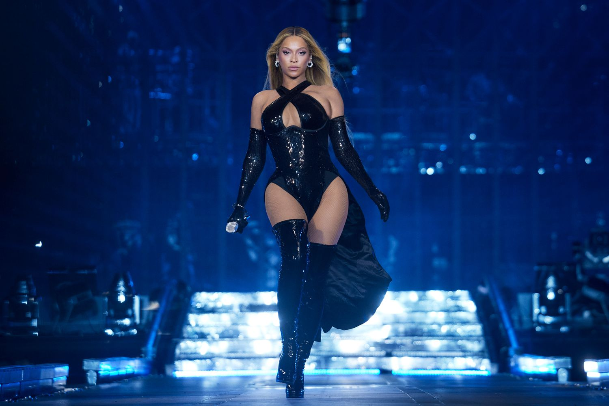
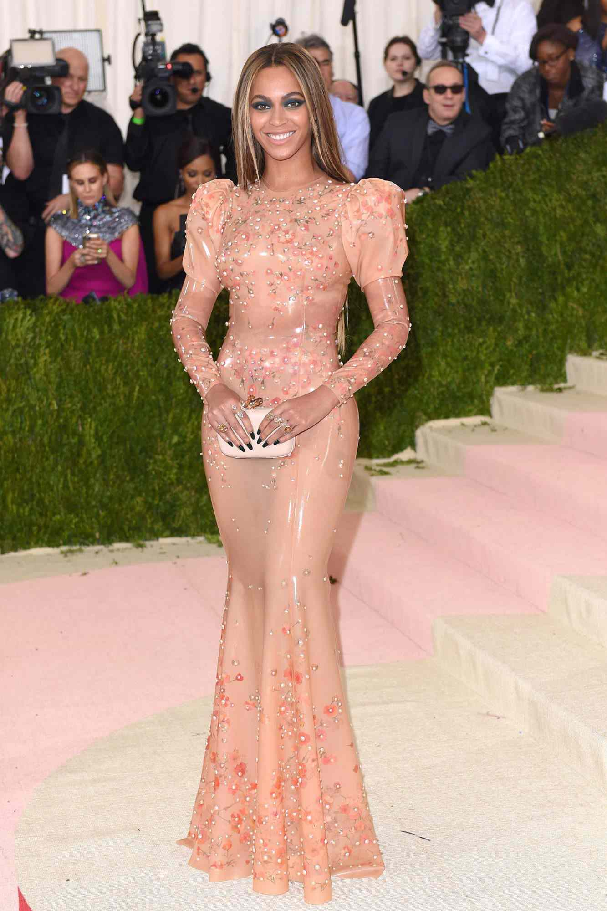
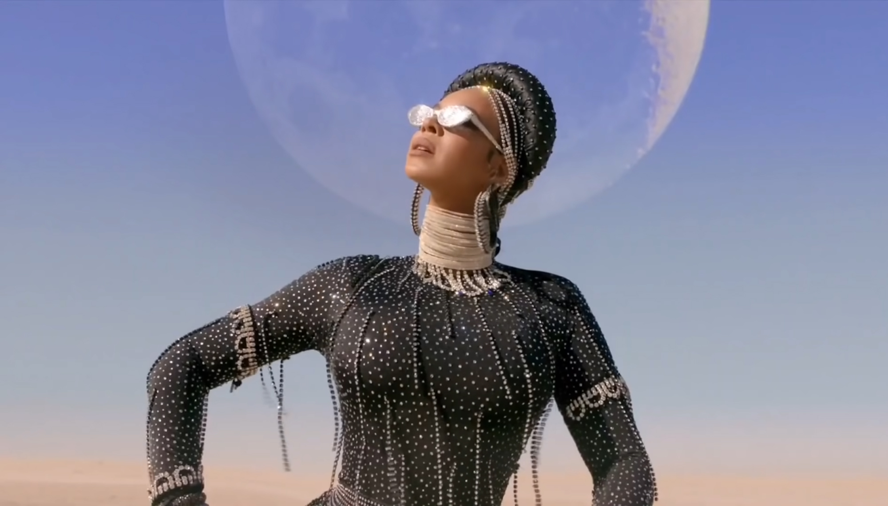

Early Career & Destiny’s Child
Beyoncé’s breakthrough came as the lead singer of Destiny’s Child, a girl group formed in the early 1990s. Managed by her father, Mathew Knowles, the group gained worldwide recognition with hits such as Bills, Bills, Bills, Say My Name, and Survivor. They became one of the best-selling female groups of all time, earning multiple Grammy Awards.
Solo Success and Cultural Impact
After Destiny’s Child disbanded in 2006, Beyoncé embarked on a highly successful solo career. Her debut album, Dangerously in Love (2003), featured chart-topping hits like Crazy in Love and Baby Boy, winning her five Grammy Awards.
Notable Achievements
- With 32 Grammy Awards, Beyoncé holds the record for the most wins by a female artist.
- Beyoncé became the first Black woman to headline Coachella.
- She launched multiple successful business ventures, including Ivy Park.
Influences & Legacy
- Beyoncé has inspired generations of artists across multiple genres.
- Her style has made a lasting impact on the fashion industry.
- She has starred in films like Dreamgirls and The Lion King.
- She actively supports women’s empowerment, racial equality, and LGBTQ+ rights.
Gallery


